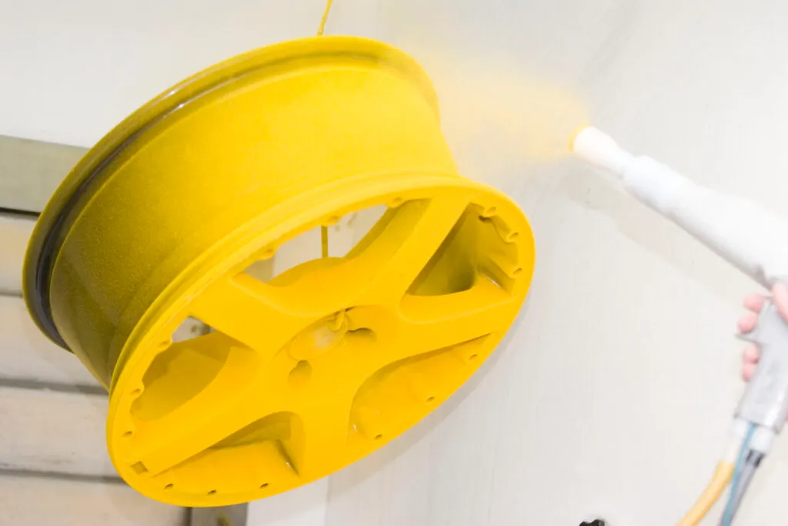
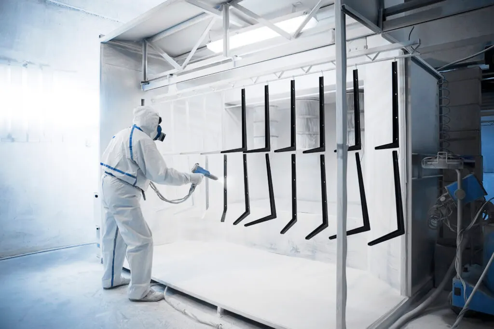

Uma demanda industrial de alta complexidade colocou a NanoBrasil no centro de uma parceria estratégica com a WEG, uma das maiores fabricantes de tintas do país.
A iniciativa busca desenvolver uma solução nanotecnológica capaz de reduzir custos, simplificar processos produtivos e ampliar o acesso a tintas antimicrobianas no mercado brasileiro, especialmente em setores ligados à saúde e à indústria.
“A nossa dor era justamente o processo. Hoje a gente faz a tinta em pó e agrega mais uma etapa para incorporar a nanopartícula. A proposta que estamos trabalhando com a NanoBrasil é justamente eliminar esse processo”, explica Claudio Rodrigues Martins, Chefe de Laboratório de Desenvolvimento de Tintas em Pó da WEG.
A atuação reforça um dos posicionamentos que a NanoBrasil vem consolidando: atuar como ponte entre grandes empresas e o conhecimento científico aplicado, desenvolvendo soluções em nanotecnologia conectadas a desafios reais da indústria.
Uma demanda da indústria

A parceria começou a partir de uma aproximação direta entre a NanoBrasil e lideranças da WEG.
“Eles tinham uma tinta antibacteriana muito cara e difícil de industrializar. O aditivo utilizado vinha do Japão e exigia uma etapa extra no processo produtivo”, relata Oscar Geigner, um dos fundadores da NanoBrasil.
O problema ia além do custo da matéria-prima.
Como a fábrica da WEG opera de forma automatizada, a necessidade de adicionar posteriormente o componente antimicrobiano gerava aumento de tempo, complexidade operacional e impacto financeiro no produto final.
A partir disso, surgiu o desafio para a NanoBrasil: desenvolver uma solução nanotecnológica que pudesse ser incorporada diretamente ao processo original de fabricação da tinta.
O desafio da nanotecnologia
A solução precisava atender exigências rigorosas da indústria.
Além da ação antimicrobiana, a nanopartícula não poderia comprometer características fundamentais da tinta, como cor, brilho, aderência, resistência mecânica e proteção anticorrosiva.
“O importante sempre é aparência, cor e brilho. A nanopartícula usada não pode afetar os outros quesitos. Porque senão eu resolvo um problema e pioro outro”, explica Claudio.
Segundo Oscar Geigner, uma das principais dificuldades técnicas estava justamente no impacto visual causado pelas partículas metálicas.
“Quanto menor a partícula, maior a ação antimicrobiana. Mas, no início, o cobre alterava muito a cor da tinta. Então chegamos a uma composição envolvendo cobre, zinco e outros elementos que resolveu esse problema”, conta.
Os testes atuais já avançaram para uma fase mais refinada, após uma primeira seleção entre diferentes combinações e concentrações de nanopartículas.
Indústria, saúde e inovação

As tintas antimicrobianas fazem parte de uma categoria conhecida como smart coatings, ou seja, revestimentos inteligentes que agregam funcionalidades além da proteção e da estética.
No caso da linha desenvolvida pela WEG, a aplicação é especialmente relevante para ambientes hospitalares, móveis médicos e equipamentos ligados à área da saúde.
“Uma cama hospitalar, por exemplo, possui regiões onde a limpeza nem sempre alcança. O aditivo antimicrobiano ajuda justamente a impedir a proliferação de bactérias nesses pontos”, explica Claudio.
Além do impacto sanitário, a solução também dialoga com demandas ambientais da indústria.
As tintas em pó já são consideradas mais sustentáveis por eliminarem solventes orgânicos e reduzirem desperdícios no processo produtivo. Agora, a expectativa é que a nanotecnologia ajude também a ampliar o acesso do mercado às versões antimicrobianas.
“Isso vai trazer redução de preço e, consequentemente, ajudar a popularizar mais as tintas antimicrobianas”, afirma Claudio.
A força da articulação
Mais do que desenvolver nanopartículas, a NanoBrasil vem fortalecendo uma atuação baseada em conexão estratégica entre academia, indústria e inovação aplicada.
A parceria com a WEG evidencia justamente essa capacidade de transformar conhecimento técnico em solução industrial concreta, conectando laboratórios, desenvolvimento científico e grandes demandas do mercado.
“O que chamou atenção foi a capacidade técnica deles e também a capacidade fabril. A NanoBrasil se mostrou uma empresa muito profissional e séria”, destaca Claudio.
O movimento reforça o posicionamento da empresa como uma das referências nacionais em nanotecnologia aplicada à indústria, com atuação crescente em setores como saúde, materiais avançados, sustentabilidade e revestimentos inteligentes.